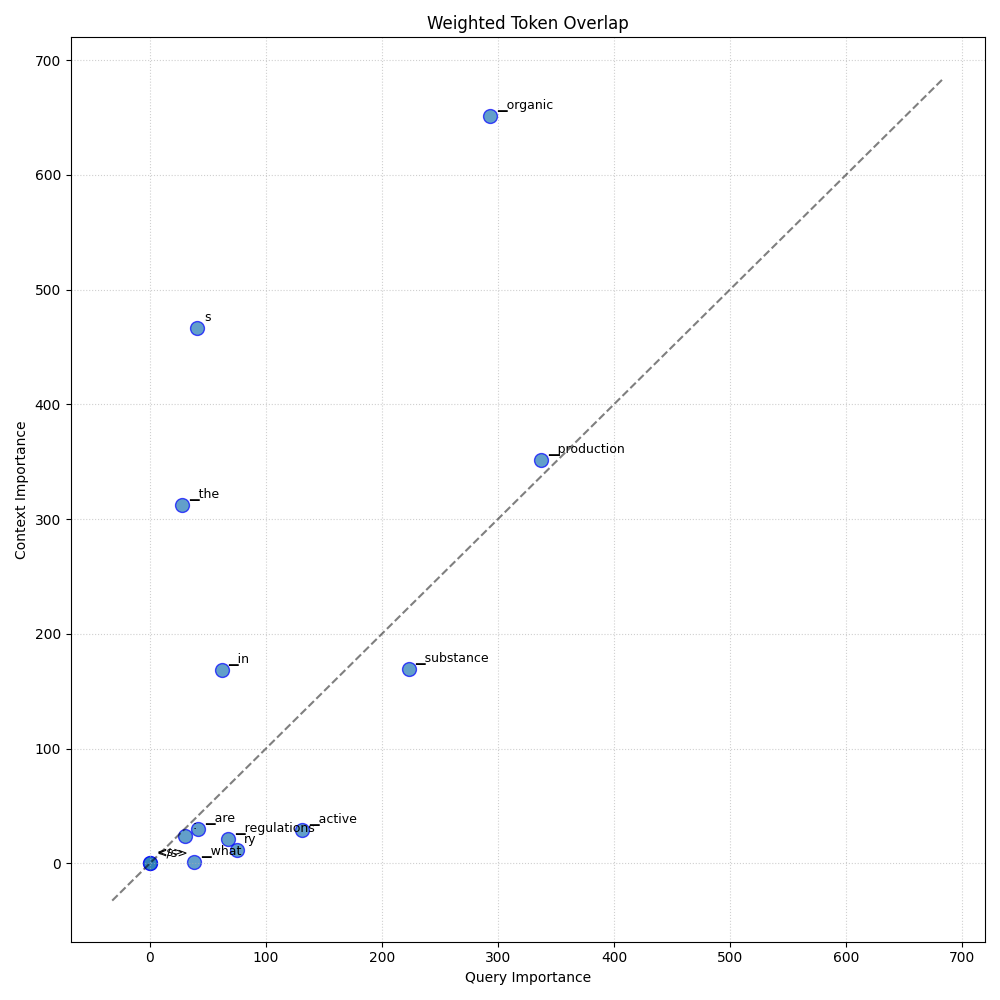

Analysis: query_70
Query: ▁que ry : ▁What ▁are ▁the ▁regulations ▁regarding ▁active ▁substance s ▁in ▁organic ▁production ?
Document Relevance

Weighted Overlap

Token Comparison

Documents
Document 1 (Click to Expand)
▁# ▁OR DIN ANCE ▁NO . ▁52 , ▁OF ▁M ARCH ▁15 , ▁2021 ▁on ▁ingredients ▁author ized ▁in ▁commercial ▁formula tions ▁of ▁ phy tos an ita ry ▁products ▁with ▁approved ▁use ▁in ▁organic ▁ agriculture . ▁Esta bli shes ▁the ▁Technic al ▁Regula tion ▁for ▁Organic ▁Production ▁Systems ▁and ▁list s ▁of ▁substance s ▁and ▁practice s ▁for ▁use ▁in ▁Organic ▁Production ▁Systems . ▁THE ▁MINI STER ▁OF ▁STAT E ▁OF ▁A GRI CUL TURE , ▁LIVE STO CK ▁AND ▁SUP P LY , ▁using ▁the ▁power s ▁con fer red ▁on ▁him ▁by ▁art . ▁87 , ▁sole ▁paragraph , ▁item ▁II , ▁of ▁the ▁Constitution , ▁in ▁view ▁of ▁the ▁provision s ▁of ▁Law ▁No . ▁10 , 8 31 , ▁of ▁December ▁23, ▁2003, ▁in ▁De cre e ▁No . ▁6 , 3 23 , ▁of ▁December ▁27, ▁2007, ▁in ▁Law ▁No . ▁10 , 7 11 , ▁of ▁August ▁5 , ▁2003, ▁in ▁De cre e ▁no ▁5. 153 , ▁of ▁July ▁23, ▁2004, ▁and ▁what ▁is ▁contain ed ▁in ▁Process ▁no ▁2100 0.0 391 45 ▁/ ▁2017 -27 , ▁resolve s : ▁## ▁ TIT LE ▁I ▁## ▁GENERAL ▁RE QUI R EMENT S ▁FOR ▁ORGANI C ▁ PRODUCT ION ▁SY STEM S ▁## ▁CHA P TER ▁I ▁## ▁PRE L IMIN ARY ▁PRO VISION S ▁Art . ▁1 ▁Esta b lish ▁the ▁Technic al ▁Regula tion ▁for ▁Organic ▁Production ▁Systems ▁and ▁the ▁list s ▁of ▁substance s ▁and ▁practice s ▁author ized ▁for ▁use ▁in ▁Organic ▁Production ▁Systems , ▁in ▁the ▁form ▁of ▁this ▁Ordin ance ▁and ▁its ▁Anne xes ▁I ▁to ▁VIII . ▁Para graph ▁1. ▁Fail ure ▁to ▁comp ly ▁with ▁this ▁Technic al ▁Regula tion ▁will ▁result ▁in ▁the ▁in fraction s ▁provided ▁for ▁in ▁Law ▁No . ▁10 , 8 31 ▁/ ▁2003 ▁and ▁De cre e ▁No . ▁6 , 3 23 ▁/ ▁2007. ▁§ ▁2 ▁Organic ▁aqua culture ▁and ▁sustainable ▁organic ▁extra ction ▁follow ▁specific ▁regulations . ▁Art . ▁2 ▁For ▁the ▁purpose s ▁of ▁this ▁Technic al ▁Regula tion , ▁it ▁is ▁considered : ▁I ▁- ▁de oxy rib on u cle ic ▁acid ▁- ▁DNA ▁/ ▁ribo nu cle ic ▁acid ▁- ▁reco mbin ant ▁ RNA : ▁these ▁are ▁DNA ▁or ▁ RNA ▁mole cules ▁result ing ▁from ▁the ▁combination ▁of ▁fragment s ▁deri ved ▁from ▁two ▁or ▁more ▁sources , ▁usually ▁from ▁different ▁species , ▁using ▁Gene tic ▁Engineering ▁techniques ; ▁II ▁- ▁risk ▁analysis : ▁procedure ▁adopt ed ▁by ▁the ▁O AC ▁or ▁O CS ▁in ▁order ▁to ▁identify ▁potential ▁risk s ▁that ▁input s , ▁environment s ▁and ▁management ▁practice s ▁adopt ed ▁in ▁the ▁production ▁unit ▁may ▁compromis e ▁the ▁organic ▁quality ▁of ▁the ▁product ; ▁III ▁- ▁bio fer tili zer : ▁product , ▁which ▁contain s ▁active ▁component s ▁or ▁bi ological ▁agents , ▁capable ▁of ▁ac ting , ▁directly ▁or ▁indirect ly , ▁on ▁all ▁or ▁part ▁of ▁the ▁cultiva ted ▁plant s , ▁improving ▁the ▁performance ▁of ▁the ▁production ▁system ▁and ▁being ▁free ▁from ▁substance s ▁not ▁author ized ▁in ▁this ▁Technic al ▁Regula tion ;
Document 2 (Click to Expand)
▁# ▁Organic ▁production ▁– ▁author ised ▁products ▁& ▁substance s ▁( update d ▁list ) ▁## ▁Organic ▁production ▁– ▁author ised ▁products ▁& ▁substance s ▁( update d ▁list ) ▁## ▁Summa ry ▁According ▁to ▁EU ▁rules ▁on ▁organic ▁farm ing , ▁producer s ▁can ▁only ▁use ▁substance s ▁and ▁products ▁that ▁respect ▁natural ▁systems ▁and ▁cycle s , ▁and ▁protect ▁and ▁improve ▁the ▁state ▁of ▁so il , ▁water ▁and ▁air , ▁and ▁plant ▁and ▁animal ▁health . ▁The ▁Commission ▁has ▁established ▁a ▁list ▁of ▁author ised ▁products ▁and ▁substance s ▁( Reg ulation ▁( EU ) ▁2021 /11 65) ▁which ▁it ▁regularly ▁updates . ▁This ▁initiative ▁updates ▁the ▁list . ▁## ▁Topic ▁* ▁Agri culture ▁and ▁rural ▁development ▁## ▁Type ▁of ▁act ▁* ▁Implement ing ▁regula tion ▁## ▁Status : ▁* ▁In ▁preparation : ▁Published ▁for ▁Information